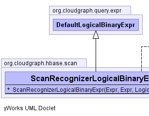
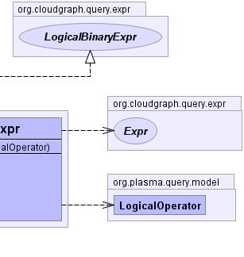

public class ScanRecognizerLogicalBinaryExpr extends DefaultLogicalBinaryExpr implements LogicalBinaryExpr
Expr,
ExprVisitor,
EvaluationContext|  |  |
| Constructor and Description |
|---|
ScanRecognizerLogicalBinaryExpr(Expr left,
Expr right,
LogicalOperator oper)
Constructs a composite expression based on the given
terms and logical
operator.
|
evaluate, getOperator, toStringaccept, createPropertyPath, getLeft, getRight, setLeft, setRightclone, equals, finalize, getClass, hashCode, notify, notifyAll, wait, wait, waitgetOperatoraccept, getLeft, getRightpublic ScanRecognizerLogicalBinaryExpr(Expr left, Expr right, LogicalOperator oper)
left - the "left" expression termright - the "right" expression termoper - the logical operatorCloudGraph® is a registered trademark of TerraMeta Software, Inc. Copyright © 2014 - All Rights Reserved.